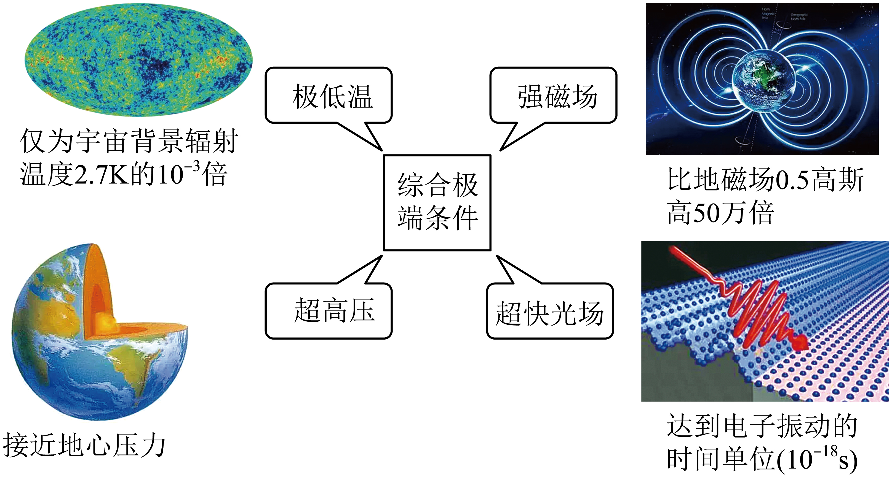
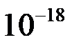
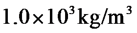

2022年北京市中考物理试题 · 科普阅读 第25题
25. 请阅读《国之重器—综合极端条件实验装置》并回答题。
国之重器——综合极端条件实验装置
从人类第一次仰望星空，到试图用“中国天限”破译日月星辰等天文现象的奥秘，从探究万物组成到利用扫描隧道显微镜透视物质的微观结构，都得益于实验条件的拓展和技术手段的进步。
在宇宙中、高温、高压、强磁场等极端环境比比皆是，而我们地球上的生活环境是一个相对温和的环境，要发现更多的新现象，就需要建造极端条件实验室，拓展研究空间。
所谓极端条件，指的是在实验室中人为创造出来特别低的温度、特别强的磁场、特别高的压强等（如图所示）实验条件。通过创造极端条件，可以发现和揭示许多在通常条件下观察不到的奇异物质特性，例如某些物质在很低的温度时，电阻就变成了0（如铝在-271.76°C——即1.39K——以下时电阻为0），这就是超导现象。

肩负原始创新重任的国之重器——国际首个综合极端条件实验装置布局在北京怀柔科学城，并已投入使用。该项目拥有极低温（可达1mK）、强磁场（可达32.35T）、超高压（可达）和超快光场（时间分辨率可达

s）极端条件实验装置。科学家们将极端条件进行综合运用，大大拓展了物质科学的研究空间，为发现新物态、探索新现象、开辟新领域，创造了前所未有的机遇。
请根据上述材料，回答下列问题
（1） 请写出我国综合极端条件实验装置中的一个极端条件：___________。
（2） 我国自主研制的载人潜水器“奋斗者”号成功完成了10000m的深潜试验，创造了中国载人深潜的新纪录。超高压极端条件的压强约为“奋斗者”号在10000m深海中（海水密度取

）承受压强的___________倍。（填写正确选项前的字母）A. 4 B. 40 C. 4000 D.400000
（3） 强磁场 产生需要大电流，但电流越大，导线的温度就会越高，通常会导致铝导线等熔化，给强磁场的产生带来限制。依据文中信息，请写出应选择哪种极端条件，能减少电流通过导线所产生的热量，从而突破限制，创造强磁场极端条件，并写出选择依据。（ ）
产生需要大电流，但电流越大，导线的温度就会越高，通常会导致铝导线等熔化，给强磁场的产生带来限制。依据文中信息，请写出应选择哪种极端条件，能减少电流通过导线所产生的热量，从而突破限制，创造强磁场极端条件，并写出选择依据。（ ）